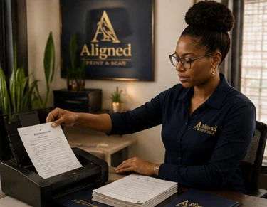

A review copy before return
Scanbacks are digital images of a completed physical signing package sent through the orderer's approved channel for review. They do not replace the original documents unless the orderer explicitly says so.
Why scanbacks are requested
- To check signatures, initials, dates, and required notarizations before shipment.
- To identify a missed item while correction may still be possible.
- To meet funding, closing, or quality-control timelines.
- To create an authorized operational review copy.
What happens next
APS follows the assignment instructions, uploads only through the designated secure channel, waits for required release direction when applicable, and returns originals using the authorized label or delivery method.
Frequently asked questions
Are scanbacks always required?
No. The ordering party determines whether they are required.
Do scanbacks replace originals?
Usually not. Follow the orderer's return instructions.
Can a signer receive the scanbacks?
Document access is controlled by the transaction and ordering party; APS does not independently distribute the package.